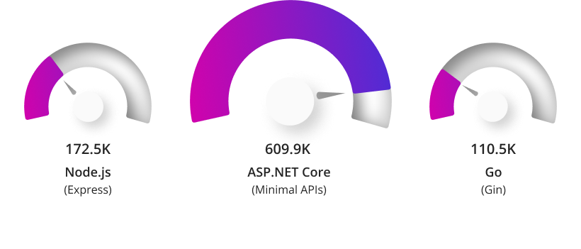
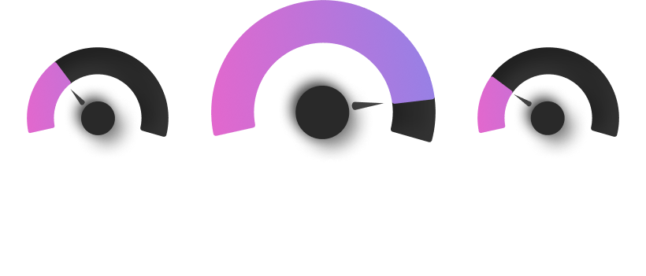

This started with a chart on the .NET website. It compares ASP.NET Core Minimal APIs with Express and Gin on TechEmpower's Fortunes test, and .NET wins comfortably. The numbers are real, but the framing felt too clean. Minimal APIs represent Microsoft's modern performance path; Express and Gin are older, familiar framework choices. Was this a fair comparison—or three snapshots from different moments in three ecosystems?


That question led me into the Round 23 results. I used Fortunes because it does more than return a hard-coded string: each implementation queries a database, adds and sorts a record, escapes the values, and renders HTML. It is controlled enough to compare implementations, yet complicated enough to expose their architectural choices. Those choices—not the language labels—became the real story.
Fair test, unfair headline
TechEmpower provides a fair arena: published rules, common hardware, the same test shape, and inspectable source code. But a fair arena does not make every pair of contestants equivalent. A small router using direct SQL performs less framework work than a batteries-included stack doing ORM mapping, dependency injection, validation, and a deep middleware pipeline. Labeling those rows “Go,” “Java,” or “Python” turns implementation results into language claims.
The comparison is therefore fair in the narrow sense and misleading in the broad one. It can answer, “How fast was this implementation under these rules?” It cannot answer, “Which language should my company use?” To read it honestly, the unit of comparison must be the complete stack: router, database driver, ORM, serializer, template engine, runtime mode, process model, and benchmark-specific tuning.
Three roles, not one league table
The colors describe the role of each implementation in its ecosystem; they do not imply that the rows provide identical features.
- Familiar framework (grey): A widely recognized starting point, such as Spring, Django, ASP.NET Core MVC, Express, or Gin.
-
Lean baseline (blue): A smaller or more direct stack, such as Go's standard library with
pgx, Minimal APIs with Dapper, Fastify, FastAPI, or Axum. - Targeted optimization (orange): A variant that changes the runtime, process, driver, or serialization strategy, such as Go prefork or Quarkus with reactive PostgreSQL.
Keep the data layer visible
Data access can dominate this test. The chart therefore names important driver and ORM choices instead of attributing every difference to the HTTP framework or language.
- Framework-oriented rows may retain an ORM, such as Hibernate or Django ORM.
- Lean rows generally use direct drivers or micro-ORMs, such as
pgx, Dapper,postgres.js, andasyncpg.
Hold two variables steady
- Test: Every number comes from the TechEmpower Round 23 Fortunes results.
- Database: Every selected implementation uses PostgreSQL, avoiding a second comparison between database engines.
TechEmpower · Round 23 · Fortunes
Backend throughput, selected variants
responses / second →
TechEmpower Round 23 Fortunes results. Missing categories are left out rather than filled with duplicate or less representative rows. Treat this as a map of benchmark implementations—not a universal language ranking.
The real story is evolution
Read horizontally and the chart appears to rank languages. Read vertically—within each ecosystem—and it shows something more useful: how six communities reacted to the same change in computing.
The earlier web was built around long-running servers, comparatively large applications, and vertical scaling. The cloud-native era rewarded small services, rapid startup, explicit resource limits, cheap concurrency, and horizontal replication. Go arrived with those properties close to its defaults and helped lead an exodus from traditional enterprise stacks. The established platforms did not stand still. Java and .NET reworked their runtimes and frameworks, while Rust, Node.js, and Python developed their own answers.
2000s
Application servers
Rich frameworks, full ORMs, large deployments, and scale-up infrastructure.
2010s
Cloud-native reset
Containers, microservices, event loops, goroutines, small binaries, and scale-out operations.
2020s
Convergence
Minimal APIs, virtual threads, native compilation, async frameworks, and tuned data paths.
Go: the cloud-native baseline grew up
Go did not win developers only with requests per second. It combined goroutines, a garbage-collected runtime, fast compilation, a strong standard library, and deployment as a single native binary. That combination fit the emerging operational model unusually well. Docker, Kubernetes, Terraform, Prometheus, and much of the surrounding control-plane ecosystem made Go feel native to the new platform because, in many cases, the platform itself was written in Go.
The trade-off was deliberate minimalism. For years, net/http provided an excellent server but only a basic request multiplexer, so routers and frameworks such as Gorilla Mux, Chi, Gin, and Fiber filled the gap. Go 1.22 changed that baseline by adding method-aware patterns and wildcards directly to ServeMux:
mux := http.NewServeMux()
mux.HandleFunc("GET /users/{id}", getUser)
mux.HandleFunc("POST /users", createUser)
http.ListenAndServe(":8080", mux)That makes Gin an awkward proxy for “modern Go.” Gin remains useful for binding, validation, middleware conventions, and application structure, but basic API routing no longer requires it. The standard-library row at 423,301 responses per second is therefore not merely a faster Gin alternative. It marks a shift in what Go includes by default.
What prefork does—and does not—prove
The prefork variant climbs from roughly 423 thousand to 899 thousand responses per second. Prefork starts several operating-system processes before traffic arrives and lets them share the listening workload, commonly through an inherited socket or the operating system's port-reuse facilities. Each worker runs the same application, while incoming connections are distributed between them.
At first, that result looks like evidence that goroutines cannot use the machine. It is not. Go already distinguishes cheap concurrency from CPU parallelism: thousands of goroutines can wait on sockets or database calls, while the runtime schedules runnable goroutines across multiple operating-system threads. A single process can execute on several cores, and GOMAXPROCS controls how many CPUs may run Go code simultaneously.
Concurrency
Many goroutines make progress by yielding while they wait for network I/O, timers, channels, or PostgreSQL.
Parallelism
Several operating-system threads execute runnable Go code at the same instant on separate CPU cores.
What prefork changes is isolation. Every worker receives its own scheduler state, heap, garbage collector, connection pool, and internal locks. That can reduce contention around a hot listener, allocator, shared queue, or runtime structure. Smaller independent heaps can also produce a different garbage-collection profile than one large heap. Under the benchmark's unusually high, sustained load and fixed machine topology, those boundaries were valuable enough to more than offset the process overhead.
The boundaries also have a price. Memory is duplicated. Database pools multiply with the worker count and can overwhelm PostgreSQL if their sizes are not reduced. In-process caches, rate limiters, and sessions are no longer globally shared. Metrics and graceful shutdown must account for every worker. A result produced by eight isolated workers is therefore a different deployment topology, not a free compiler optimization.
Kubernetes moves the process boundary outward
Prefork keeps all workers on one machine and usually inside one container. They still share the host, network namespace, deployment lifecycle, and much of the same failure domain. Kubernetes encourages a different shape: one main process per container, replicated across several pods by a Deployment and reached through a Service.
One prefork container
Several worker processes
One pod and node failure boundary
one process
one process
one process
one process
That extra boundary is operationally meaningful. Each pod can have explicit CPU and memory requests and limits, restart independently, participate in rolling updates, and be spread across nodes or zones. A Horizontal Pod Autoscaler can change the replica count as demand changes. Go suits this model because a small service is often a single binary with a modest runtime footprint, making each replica comparatively cheap.
It is still not accurate to say that four pods equal four prefork workers. Service load balancing happens at a different layer and can be affected by long-lived connections. Separate pods add network and orchestration overhead. Replicas may land on different CPUs or nodes, while prefork workers compete within one allocation. Most importantly, all replicas may still converge on the same PostgreSQL instance, so scaling the web tier can simply move the bottleneck to the database.
CPU limits deserve particular attention. A process that sees more host CPUs than its container can actually consume may create excess runnable work and suffer throttling. Modern Go releases can derive a container-aware GOMAXPROCS default; on older runtimes it should be configured explicitly or through a helper. Either way, the runtime's parallelism should match the pod's CPU budget before comparing one large pod with several small ones.
Prefork is evidence that isolation can improve throughput. Kubernetes turns isolation into a unit of scheduling, scaling, and resilience.
The practical experiment is therefore three-way: benchmark one Go process with an appropriate GOMAXPROCS, several workers inside one allocation, and several single-process pods behind the same service. Keep the total CPU, memory, and permitted database connections constant. Compare throughput and tail latency, but also memory, throttling, restart behavior, rollout time, and what happens when one worker or node fails. Only then does the prefork result become an architectural finding rather than an impressive orange bar.
Java: the giant fought back on several fronts
Java entered the cloud era carrying both enormous strengths and visible baggage. The JVM had world-class optimization, observability, libraries, and enterprise adoption, but the dominant model—application servers, large heaps, full-featured frameworks, and one platform thread per request—looked expensive beside a small Go binary. Spring Boot simplified packaging and configuration, yet it did not erase startup time or memory concerns.
The response was not one feature but a portfolio. Quarkus and Micronaut moved more work to build time and designed around containers. GraalVM Native Image offered ahead-of-time compilation for faster startup and lower idle memory, with compatibility trade-offs. Project Loom brought virtual threads into Java 21, allowing large numbers of mostly blocking tasks without assigning each one an expensive operating-system thread. Modern garbage collectors reduced pause-time concerns, while the JVM retained its ability to optimize hot code over a long-running process.
The Java bars capture that transition—but they do not isolate it. Spring at 205,876, Quarkus with RESTEasy and Hibernate at 802,294, and Quarkus with Vert.x and reactive PostgreSQL at 1,181,497 are different framework generations and different data-access models. The final jump is not “Java became six times faster.” It is evidence that modern Java can shed layers, use a reactive driver, and compete near the top when throughput is the design goal.
Java did not become Go. It made cloud-native execution another mode of the JVM ecosystem.
.NET: from Windows framework to performance platform
The .NET story is similarly easy to miss if “C#” is treated as one timeless bar. Classic .NET Framework was tied closely to Windows and IIS, with a reputation for substantial runtime and framework overhead. The launch of the open-source, cross-platform .NET Core reset that architecture. Kestrel became a high-performance server, the runtime began an aggressive cycle of allocation and networking improvements, and ASP.NET Core removed much of the historical pipeline.
Minimal APIs, introduced with .NET 6, completed the visible shift for small HTTP services. They gave C# a concise path that bypassed much of MVC's ceremony while retaining the .NET ecosystem. Dapper offered a lighter data layer than Entity Framework, and Native AOT later created a path to self-contained native executables where startup time and footprint matter more than JIT optimization.
That history explains both .NET bars: MVC reaches 409,255, while Minimal APIs with Dapper reach 738,196. It also explains why Microsoft's homepage comparison is simultaneously accurate and selective. Its modern lean path is compared with Express and Gin, not with Fastify or Go's modern standard-library implementation. The chart demonstrates .NET's successful reinvention; it does not establish a timeless C# advantage over Node.js or Go.
Rust: a new answer rather than a comeback
Rust did not carry an old web stack into the cloud. It arrived with a different proposition: memory safety without garbage collection and abstractions designed to compile away. Tokio supplied an asynchronous runtime, and Axum built an ergonomic web framework around it. The result is precise control over allocations and concurrency without a managed runtime or garbage-collection pauses.
That architecture suits a throughput benchmark, and Axum leads this selection at 1,270,151 responses per second. But even this longest bar needs context. Rust asks developers to reason about ownership, lifetimes, async boundaries, and compilation in ways that Go, C#, Java, Python, and JavaScript often do not. For proxies, gateways, databases, and latency-sensitive data planes, that trade can be compelling. For an ordinary business API, engineering time may be more valuable than the final increment of throughput.
Node.js: the event loop was the original disruption
Before Go became synonymous with cloud-native services, Node.js had already challenged thread-per-request web servers. Its event loop made I/O concurrency accessible in one language across browser and server, while npm accelerated ecosystem growth. Express became the default because it was small, understandable, and flexible—not because it extracted every possible request per second.
As Node matured, Fastify made performance an architectural concern through a lower-overhead lifecycle, schema-based validation and serialization, and carefully designed plugins. In this chart, Express with postgres.js reaches 172,523; Fastify reaches 437,129. That internal comparison is more informative than “Node loses to .NET.” It shows the cost of treating a durable 2010-era default as the endpoint of the Node ecosystem.
Node's JavaScript execution remains centered on an event loop per worker, so CPU-heavy work needs worker threads, separate processes, or external services. For I/O-heavy APIs, however, its original model remains relevant—and Fastify shows how far that model has been refined.
Python: optimizing for a different scarce resource
Python historically optimized developer time: Django bundled a broad application stack, while FastAPI later created a lean asynchronous path. That evolution moves this test from Django's 43,669 to FastAPI's 163,894 responses per second. CPython has always allowed many threads, but the Global Interpreter Lock normally permits only one of them to execute Python bytecode at a time, encouraging CPU parallelism through worker processes. PEP 703 made the GIL optional, and Python 3.14 officially supports an optional free-threaded build in which Python threads can execute across cores. A hypothetical 25% to 35% gain would put FastAPI near 205,000–221,000 responses per second, but that is an illustration rather than a measured forecast; only a controlled free-threaded rerun could establish the effect. Python remains the slowest group here, but its productivity and data, automation, and AI ecosystems optimize a different scarce resource: engineering time.
The convergence behind the competition
Every ecosystem now has some version of the same playbook: a smaller HTTP surface, cheaper concurrent work, a direct or lightweight database path, fewer allocations, container-aware deployment, and an escape hatch to multiple workers or replicas. Go helped make those properties the expected baseline. Java and .NET answered without abandoning their mature ecosystems. Rust pushed efficiency and safety further. Node and Python built modern successors alongside their established frameworks.
This is why the benchmark is most useful as history rather than a horse race. The gaps within a language often say more than the gaps between languages. They show what each community considers optional, what it moved into the runtime or standard library, and what developers must trade away to reach the fastest path.
| Ecosystem | Original strength | How it evolved | What the chart really shows |
|---|---|---|---|
| Go | Simple concurrency and deployment | A more capable standard router | The default stack is now a serious baseline |
| Java | Mature JVM and enterprise ecosystem | Quarkus, native images, virtual threads | Architecture and data access dwarf the language label |
| .NET | Productive managed platform | Cross-platform runtime, Kestrel, Minimal APIs, AOT | The modern lean path is highly competitive |
| Rust | Safety without a garbage collector | Tokio and ergonomic async frameworks | Maximum throughput carries a complexity trade |
| Node.js | Accessible event-driven I/O | Fastify and optimized serialization | Express is history, not the performance ceiling |
| Python | Developer velocity and ecosystem reach | ASGI, FastAPI, optional free threading | A lean path helps, while the runtime is also changing |
So, are the results fair?
Yes, as reproducible measurements of specific implementations. The common hardware, workload, database, and published code make the results useful for studying engineering techniques.
No, as a ranking of languages or default production architectures. The rows do unequal work, expose unequal features, apply unequal tuning, and represent different points in each ecosystem's history. A benchmark implementation may also accept complexity that a normal team would reject.
The practical response is not to ignore the numbers, but to ask better questions of them:
- Are the implementations using comparable database abstractions and returning equivalent behavior?
- Is this the stack a team would actually operate, or a benchmark-specialized path?
- What are the latency distribution, memory use, CPU cost, startup time, and failure characteristics—not only peak throughput?
- Does the application need the features omitted by the faster row?
- Is the real bottleneck HTTP handling, or is it a query, an external API, contention, or business logic?
What I took away
The .NET marketing chart was not wrong. It was one carefully chosen frame in a much longer film. .NET really did transform itself into a performance platform. Go really did change expectations for cloud-native software, then continued evolving its standard library. Java really did answer the pressure with new runtimes, frameworks, and concurrency models. Rust, Node.js, and Python each optimized for a different balance of machine efficiency and human productivity.
The longest bar tells us who won one test. The shape of all the bars tells us something richer: cloud-native ideas became so persuasive that every major backend ecosystem found a way to absorb them.
Benchmark source
TechEmpower Web Framework Benchmarks, Round 23
The visual uses the Fortunes test published on February 24, 2025. Open the source to inspect exact variants, implementation metadata, requirements, and environment details.
Explore the benchmark data open_in_new